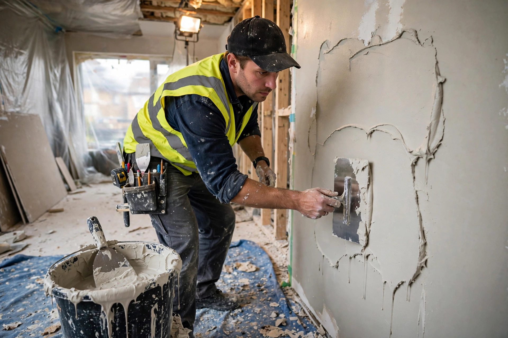

Plaster is a building material used for the protective or decorative coating of walls and ceilings and for moulding and casting decorative elements. In English, "plaster" usually means a material used for the interiors of buildings, while the material used for external surfaces is usually called stucco or render. The most common types of plaster are manufactured from gypsum, lime, or cement as their main ingredient.
| Plaster | |
|---|---|
 A worker applying wet gypsum plaster to an interior wall with a trowel Applying plaster to a wall | |
| Type | Building material |
| Main ingredients | Gypsum, lime, or cement; water; aggregates |
| Uses | Wall and ceiling coating, mouldings, casts, sculpture |
Plaster is one of the oldest building materials. Evidence of its use dates back some 9,000 years to ancient settlements in Anatolia and Syria, where lime plaster was applied to floors and walls. In ancient Egypt, gypsum plaster was used in the construction of the pyramids and as a coating for tomb walls that were then painted. The Greeks and Romans developed the material further; the Roman writer Pliny the Elder described its preparation, and fine Roman plasterwork survives at sites such as Pompeii. During the Renaissance and Baroque periods, plaster and stucco became central to interior decoration, and in the 18th and 19th centuries plaster of Paris was mass-produced for ornamental mouldings in houses across Europe and North America.
Gypsum plaster is made by heating gypsum (calcium sulfate dihydrate) to about 150 °C, driving off part of its water to form calcium sulfate hemihydrate, commonly called plaster of Paris — a name derived from the large gypsum deposits once mined in the Montmartre district of Paris. When mixed with water it sets in a mildly exothermic reaction, reverting to the dihydrate. Its quick setting time can be slowed with retarders. Gypsum plaster is widely used for interior walls and, in medicine, for orthopaedic casts.
Lime plaster is a mixture of calcium hydroxide (slaked lime), sand, and water. It hardens slowly by carbonation — reacting with carbon dioxide in the air to form calcium carbonate. It has been used since antiquity and remains common in the conservation of historic buildings because it is breathable and softer than the masonry it coats.
Cement plaster substitutes Portland cement for part or all of the binder, producing a harder, more water-resistant render suitable for exterior surfaces.
Clay plasters use clay, sand, and fibres such as straw. They were traditional in many parts of the world and have seen renewed interest in natural building.
Categories: Building materials · Gypsum · Plastering